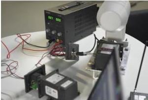
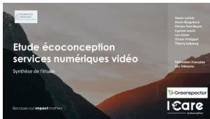

R&D
Un outil rigoureux au service de votre R&D
Grâce à Greenspector Studio, nos partenaires ou nos experts peuvent vous accompagner sur vos projets de R&D ou toute autre mesure particulière :
Smartphones & tablettes
Mesures sur terminaux mobiles réels, Android et iOS.
Smart TV, box, PC…
Mesures sur équipements multimédia et postes de travail.
Objets connectés
Mesures sur IoT et dispositifs expérimentaux.
Grâce à ses modules hardware, Greenspector Studio vous permet de mesurer la consommation d'énergie sur tout équipement électrique, qu'il fonctionne sur batterie ou sur secteur.
Études
R&D, études… mesurer facilement sur terminaux réels
Greenspector Studio est un outil de choix pour les études et la R&D. Rigoureux, précis et facile à mettre en œuvre, il permet d'intégrer dans vos projets la mesure de nombreuses métriques sur terminaux réels.
Exemple
Pour sa R&D, un opérateur mobile européen cherche à comparer l'impact énergétique de différents formats de streaming vidéo en 5G. Il monte une infrastructure de test de bout-en-bout : serveurs, antennes, terminaux… Il obtient des métriques précises sur ses serveurs et ses antennes réseaux.
Mais comment savoir ce qui se passe sur les terminaux ? Avec Greenspector Studio, il peut réaliser une campagne de mesures complètes, comparant les formats AVC, VVC et HEVC ; CMAF et multicast ; différents paramétrages du player vidéo, etc.
Modules hardware
R&D, études… mesurer sur tout et n'importe quoi ou presque
Nous avons intégré à Greenspector Studio des modules de mesure hardware, disponibles en option. Ces modules de mesure s'interfacent entre l'objet à mesurer, votre PC, et Greenspector Studio. Ainsi, vous pouvez récupérer et analyser sur Greenspector Studio n'importe quelle mesure de consommation d'énergie.
C'est ainsi que vous pouvez par exemple mesurer la consommation d'énergie d'un capteur de givre avant de le déployer le long des voies ferrées !


Suivant la nature de l'objet à mesurer, une automatisation totale ou partielle des tests est envisageable.
Notre étude pour la Fédération Française des Télécoms avec le cabinet iCare, impliquant des mesures sur Smart TV, est un autre exemple des capacités de Greenspector Studio.
Capacités
Capacités de mesure de Greenspector Studio
Ce tableau résume nos capacités de mesure :
| Mode | Type d'application ou d'équipement | Automatisation du parcours | Mesure d'énergie | Autres métriques | Impact environnemental | Économie / certificat |
|---|---|---|---|---|---|---|
| Usage SaaS standard | Application mobile Android native ou hybride | Oui, avec GDSL | Oui, sur les appareils Android et iOS du Test Bench | Données, temps de réponse, CPU, mémoire + métriques techniques Dumpsys | Oui, GDSL + multicritères | Oui, émission de certificat possible |
| Application mobile iOS native ou hybride | Oui, avec GDSL | Oui, sur les appareils Android et iOS du Test Bench | Données, temps de réponse | Oui, GDSL + multicritères | Oui, émission de certificat possible | |
| Site web simple : site corporate, vitrine… | Oui, avec GDSL | Oui, sur les appareils Android et iOS du Test Bench | Données, temps de réponse, CPU, mémoire (Android) | Oui, GDSL + multicritères | Oui, émission de certificat possible | |
| Site web complexe : e-commerce, portail client, intranet… | Oui, avec GDSL | Oui, sur les appareils Android et iOS du Test Bench | Données, temps de réponse, CPU, mémoire, selon contexte | Oui, GDSL + multicritères | Oui, émission de certificat possible | |
| Application web métier : ERP, BI, LLM… | Oui, avec GDSL | Oui, sur les appareils Android et iOS du Test Bench | Données, temps de réponse, CPU, mémoire, selon contexte | Oui, GDSL + multicritères | Oui, émission de certificat possible | |
| Mode laboratoire | Hardware sur batterie : IoT, objet connecté… | Oui, via le framework Greenspector for IoT, à intégrer dans le code de l'objet | Oui, via sonde hardware ou sonde logicielle si disponible | Données et métriques fournies par l'objet | Oui, nécessite les facteurs d'impact de l'objet, GDSL | Non |
| Hardware sur secteur : Smart TV, set-top box, décodeur, PC… | Non. Mesure sur une période fixe, pendant un test manuel ou automatisé par une solution tierce, ou en états stables | Oui, via sonde hardware plug-and-play | Données, sous réserve des prérequis réseau | Oui, modules TV, STB et autres disponibles, GDSL | Non | |
| Application avec client lourd installé sur PC ou Mac | À définir selon le contexte de test | À définir selon le contexte de test | À définir selon le contexte de test | À définir selon le contexte de test | Non |
Projet spécifique
Vous avez un projet de mesure spécifique ?
Nos partenaires et nos experts peuvent vous aider à cadrer votre besoin, choisir le bon protocole de mesure et exploiter les résultats obtenus.